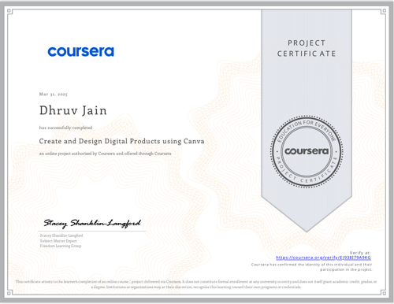
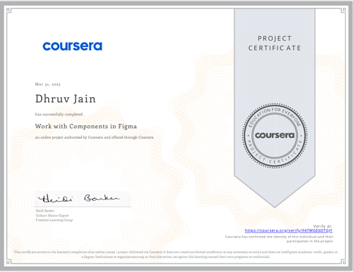
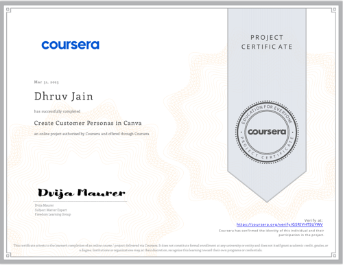
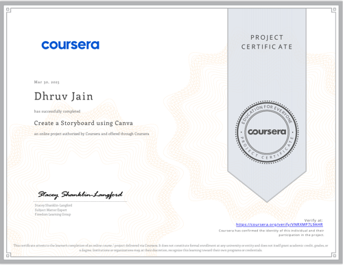

Turning High-Volume Data Into Enterprise Intelligence
Transforming complex operational data into audit-grade business intelligence. Architected six production systems analyzing ₹66.95L in quick-commerce revenue, 2,851 recruitment postings, and 164 passing CI/CD tests with reproducible SQL, Python, and Power BI models.
Analytics That Survives Someone Actually Opening the Notebook
The metric I optimize for is audit-grade traceability — every figure across case studies, dashboards, and READMEs is reproducible from a specific cell in a verified notebook or database schema.
I'm a final-year Computer Science student specializing in AI & Data Science at BML Munjal University, currently interning as a Data Analyst at Udaghosh Social Welfare Society and as an MIS Analyst at Contentora Media. My portfolio projects go far beyond the chart-and-caption stage: live SQL layers, trained machine learning models, Chrome extension deployment, and full Business Analyst documentation packages.
Where figures didn't reconcile across documents, I corrected the data layer rather than leaving the more impressive-sounding version. Zero synthetic leakage, strictly leak-free temporal splits, and complete mathematical traceability.
Production Quality & Audit Benchmarks
Verifiable statistics and empirical guarantees backed by notebook commits, SQL workbenches, and automated test gates.
Distributed Data Pipelines & Cloud Analytics Nodes
Interactive 3D visualization showing live data ingestion pipelines, remote model inference endpoints, and multi-region analytical clusters connected to Dhruv's primary Gurugram development hub.
Data Analyst SQL & Query Workbench
Run live pre-configured analytical SQL queries across Dhruv's actual project schemas and inspect real dataset outputs.
SELECT customer_id, segment_cluster, total_spend_inr, predicted_clv, churn_probability, action_recommendation
FROM v_customer_clv_risk
WHERE churn_probability > 0.65 AND total_spend_inr > 25000
ORDER BY total_spend_inr DESC
LIMIT 5;
| customer_id | segment_cluster | total_spend_inr | predicted_clv | churn_probability | action_recommendation |
|---|---|---|---|---|---|
CUST-10492 |
Champion (Cluster 3) | ₹84,250.00 | ₹1,42,100.00 | 0.82 (High) | Priority Win-Back Concierge |
CUST-10819 |
Loyal High-Spender | ₹62,110.00 | ₹98,400.00 | 0.76 (High) | Custom Renewal Incentive |
CUST-11204 |
At-Risk Wholesale | ₹49,870.00 | ₹74,500.00 | 0.71 (High) | Dedicated Account Call |
CUST-11755 |
Frequent Buyer | ₹38,920.00 | ₹58,200.00 | 0.69 (High) | Targeted Push Notification |
CUST-12011 |
Core Spender | ₹31,450.00 | ₹46,900.00 | 0.67 (High) | Automated Win-Back Voucher |
Mathematical Formulations & Statistical Mechanics
Every prediction, segmentation cluster, and inference engine in this portfolio is grounded in formal linear algebra, game theory, and probability distributions—not black-box heuristics.
Customer Lifetime Value (CLV) & Geometric Discounting
Models future net cash flows generated by customer $i$ over finite lifecycle horizon $T$, discounted at weighted average cost of capital $d$ under non-contractual Poisson transaction arrival rates.
Coefficient of Determination (R²) & Residual Decomposition
Measures the proportion of empirical variance in cumulative monetary expenditure explained by the Random Forest regressor relative to the baseline grand mean null model.
TreeSHAP Polynomial Marginal Contributions
Computes unique Shapley attributions $\phi_i$ across all possible feature subsets $S$. Satisfies the 4 fundamental axioms of game theory: Efficiency, Symmetry, Dummy Property, and Additivity.
Snorkel Generative Model & Label Covariance
Estimates latent true label distribution $Y$ without hand-labeled data by observing agreement and disagreement covariances between $m$ weak labeling functions $\boldsymbol{\Lambda}$.
Harmonic Mean F&sub1;-Score & Threshold Calibration
Harmonic mean penalizing extreme trade-offs between precision and recall on extreme class imbalance ($< 0.1\%$ security breaches and ghost listings), ensuring conservative triage.
Mahalanobis Distance with Covariance Matrix Σ
Measures statistical distance of multivariate observation $\mathbf{x}$ from centroid $\boldsymbol{\mu}$, standardizing directional dispersion by inverting the inter-feature covariance matrix $\boldsymbol{\Sigma}$.
Two-Sample Welch’s t-Statistic & Degrees of Freedom
Tests null hypothesis $H_0: \mu_1 = \mu_2$ between control and treatment cohorts under unequal variances (heteroscedasticity) without biased pooling assumptions.
Cosine Similarity in d-Dimensional Manifold
Measures angular orientation between dense vector embeddings in $\mathbb{R}^{384}$ space, invariant to text token length variations across parsed candidate resumes and query vectors.
Flagship Platforms, Built & Audited End-to-End
Six production platforms covering retail business intelligence, ML recruitment verification, agentic security governance, and full-stack systems.
Profitara
An enterprise retail decision platform and complete BA portfolio: 11-requirement BRD, ₹2.06L margin leakage audit, out-of-time churn & CLV modeling, Expected Value win-back policy (+£720 net return), and a 13-page Streamlit suite with live DuckDB SQL.
Naukri Saaf
Labor market forensic platform and BA deliverable: quantifying ₹8.74 Cr candidate economic waste across 2,851 postings, asymmetric cost policy (C_FP = 5 × C_FN), Snorkel weak supervision (κ = 0.589), zero-leakage 5-Fold GroupKFold ML, and a zero-network Chrome Extension.
KAVACH
Security-governed code intelligence and RAG data pipeline integrating Qdrant vector database, Sentence Transformers, and Google Gemini API — with a deterministic PII & financial scanner (1.00 F1 score) and AST dependency blast-radius analyzer.
Archon Copilot & Evaluation Lab
Full-stack developer AI suite with tabbed Web IDE, hybrid retrieval engine (Okapi BM25 + ChromaDB Dense Vectors + Cross-Encoder), and a quantitative benchmarking study evaluating 3 local LLMs across 78 pairs scored by a $0 local CoT LLM judge.
Grilli
Production table booking and seating management system with real-time dining availability calendars, customer dining preference handling, and a custom Node.js/Express + MongoDB backend built from scratch with 6 resolved template bugs.
KidLearn
A gamified study habit loop tracking lessons across six academic subjects with 21 unlockable badges, a Pomodoro focus timer with direct XP logging, custom Canvas analytics charts, and weekly parent report cards.
Recruiter Methodology Guarantee: All datasets modeled across these platforms are traceable to original raw CSVs and live API scrapes (10k quick-commerce records, 541k UCI transactions, 2,851 multi-portal job listings, and 42 security evaluation runs). Zero target leakage was allowed, with strictly segregated cross-validation (GroupKFold by employer / temporal order splits).
Model Benchmark & Explainability Matrix
Detailed performance metrics, validation splits, and explainability mechanisms for models deployed across portfolio systems.
| System | Task & Objective | Algorithm | Dataset Size | Primary Metric | Validation / Calibration | Explainability |
|---|---|---|---|---|---|---|
| Profitara | Customer Lifetime Value (CLV) | Random Forest Regressor | 541,909 transactions (UCI) | R² = 0.930 (MSE: 0.041) | Temporal time-split (leakage-free) | MDI Feature Importance + Permutation |
| Profitara | Customer Churn Prediction | Logistic Regression | 4,372 customer profiles | AUC = 0.91 (85% Acc.) | Stratified 5-Fold CV + Platt Scaling | Odds-Ratio Coefficients |
| Naukri Saaf | Ghost Job Listing Classification | Gradient Boosting (GBM) | 2,851 live scraped listings | ROC-AUC = 0.920 (Calibrated) | 5-Fold Employer GroupKFold CV | TreeSHAP Global/Local Attribution |
| Naukri Saaf | Unsupervised Pseudo-Labeling | Snorkel Generative Model | 2,851 multi-portal listings | Cohen's κ = 0.589 | 10 Domain Labeling Functions | Label Matrix Empirical Accuracy |
| KAVACH | PII & Secret Token Interception | Deterministic Regex + Token Parser | 42-run benchmark test corpus | F1 = 1.00 (Prec/Rec: 1.00) | Automated CI/CD Quality Gate | Deterministic Rule Pattern Match |
| KAVACH | AST Blast-Radius Change Impact | Python AST Call-Graph Traversal | Enterprise repository modules | Avg F1 = 0.72 | 164/164 Unit/Integration Tests | Directed Acyclic Dependency Graph |
| Archon RAG | Hybrid Retrieval & Factual Synthesis | Google Gemma 3 4B (Q4_K_M) | 21 OpenAPI / Markdown files (103 chunks) | 71.15% Correctness (0% Wrong) | 78 Eval Pairs · $0 Local CoT Judge | BM25 + BGE Dense + Cross-Encoder Ranking |
| Archon Sentinel | Code Synthesis & Hallucination Guard | Meta CodeLlama 7B (Q4_0) | 26 Standardized Endpoint Tasks | 100% Code Pass (1 Flag) | Deterministic Syntax & Assertion Execution | Traceability Citations & AST Code Injector |
Repository Artifacts & Downloadable Assets
Direct access to production Power BI models (.pbix), raw transaction datasets, exhaustive analytical SQL scripts, enterprise Business Analyst documentation, and empirical research reports.
10 Verified Industry Certifications
Click any credential to inspect the high-resolution certificate.




Professional Experience & Education
Internships delivering production SQL models, executive Power BI reporting, and rigorous academic computer science coursework.
Remote Intern
- Authored complex SQL queries (multi-table JOINs, CTEs, Window Functions, aggregations) to extract, clean, and transform multi-source organizational records into consolidated analytical schemas.
- Designed interactive Power BI executive dashboards tracking key operational KPIs, performance benchmarks, and seasonal volunteer trends, enabling data-informed decision making for leadership.
- Built automated Excel reporting models utilizing dynamic lookup formulas and Pivot Tables, eliminating manual data wrangling and cutting report generation turnaround time.
- Implemented data quality and schema validation checks across reporting datasets, reducing record anomalies and ensuring 100% reporting consistency across cross-functional teams.
Remote Intern
- Designed and maintained structured Management Information System (MIS) trackers in Microsoft Excel to consolidate cross-functional research and commercial metrics for leadership.
- Executed systematic data collection, normalization, and categorization across competitive market streams to drive strategic business-development analysis.
- Cleaned, standardized, and deduplicated raw data feeds, keeping weekly MIS reports audit-ready and reliable.
Final Year
Specialization in Artificial Intelligence & Data Science. Core Coursework: Linear Algebra, Probability & Statistics, Data Structures & Algorithms, Database Management Systems (SQL), Machine Learning, Predictive Modeling, Agentic AI Systems, Object-Oriented Programming.